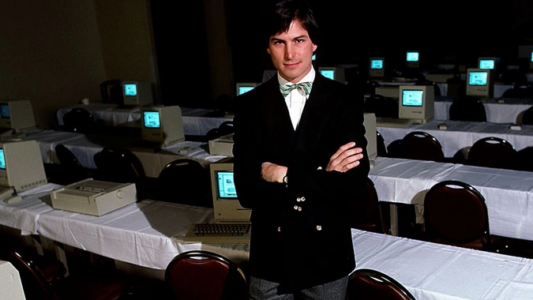

The most successful people benefit from a combination of luck and personal prowess. Luck in the sense that timing is often a factor when ideas catch fire, and personal prowess in the sense that successful people are capable of capitalizing on lucky timing.
If you’re hoping to increase your personal or professional success, you can cultivate personality traits that will optimize your chances. Let’s take a look at 10 personality traits that have enabled magnates like Steve Jobs, Sheryl Sandberg and Jack Ma to achieve remarkable things.
In 1983, Apple released Lisa. It was one of the first computers to use a bitmapped graphical interface and mouse. In short, the device was a revolution that put Apple on the map as a company that was developing cutting-edge personal computers.
As Walter Isaacson noted in his biography Steve Jobs, Jobs led a team hoping to rethink what a personal computer could be. Rather than develop a device that could contend with market leaders of the day, Jobs and his team approached the task of developing a new personal computer with an open mind.
Refusing to simply stick with the status quo, they pushed boundaries and designed a product built to solve a pesky problem (the usability of personal computers).
Related: A Job Application Steve Jobs Handwrote in 1973 Is Full of Errors and Will Be Up for AuctionWhen Jeff Bezos founded Amazon, he knew that his company would need to focus on a specific problem in order for his small business to make any headway. As a result, he originally focused his team on becoming the world’s largest online bookseller.
The company worked on innovations that would improve customer experience as it related to ecommerce bookselling. During a 1999 interview with 60 Minutes, Bezos was asked about his desk. Though at the time Bezos was already a billionaire, the desk was made of an office door and taped-together 4x4s. Bezos replied that the desk was “a symbol to spend money on things that matter to customers.”
Since the early days of Amazon, Bezos has focused himself and his company on customer satisfaction. As a result, Amazon has been able to properly prioritize projects while avoiding initiatives that distract from the company mission